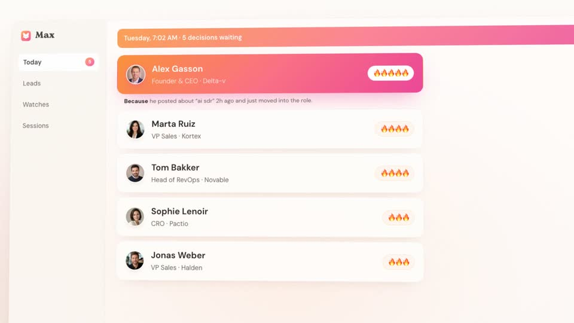
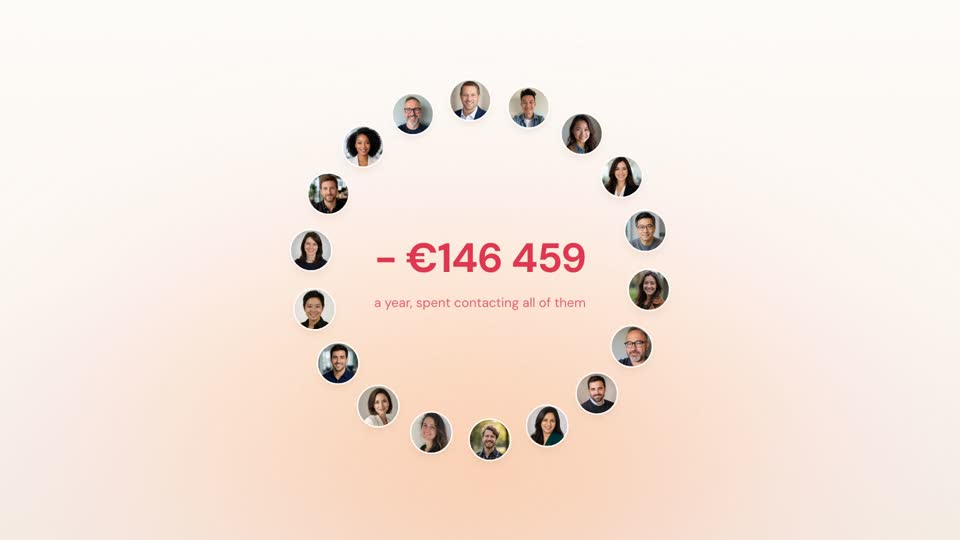
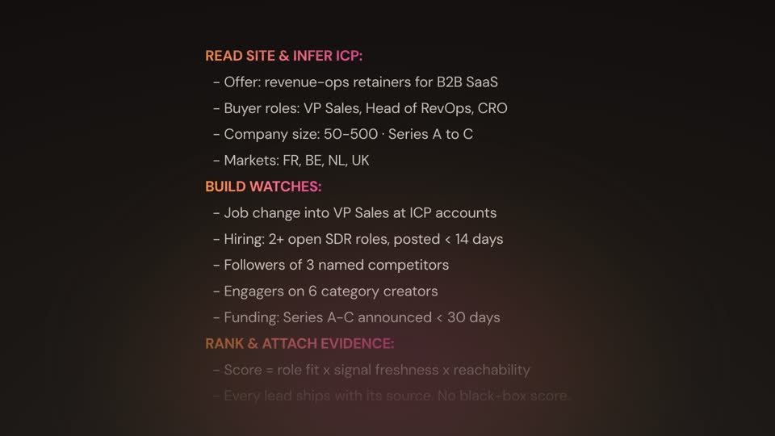
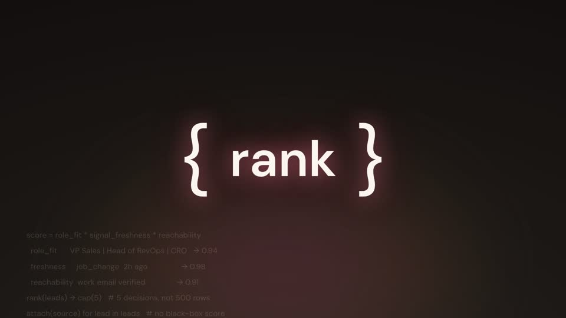
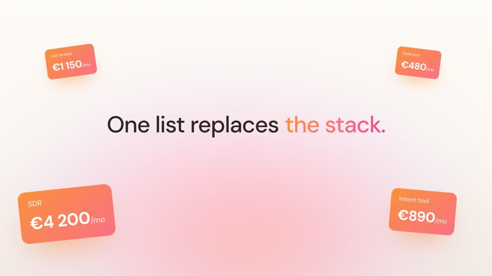

The method, step by step
Seven steps. The first four are preparation you only do once, and they're why the film itself took two evenings.
1Teach the machine to reverse-engineer
Weeks before the film, I built a reverse-engineering skill in Claude Code: give it any post and a 3-agent pipeline (decoder → translator → critic) tears it down into an ingredients list across 17 dimensions. The rule it hard-codes into every session: never imitate the artifact, extract the ingredients. This one habit powers everything below.
2Tear down the masters
Thirteen days before the film, I ran that habit on the best launch-film makers and wrote two forensic teardowns to disk: 1600.agency (132 frames analyzed; the agency behind several of the best SaaS launch films) and Represent Studio (the studio behind YC launches, their founder's doctrine distilled from four videos). Then a storyboard built from both grammars. These studios are the masters of the craft; the whole method is built on studying them. Pick yours and make the machine study them before you ever ask it to create.
3Get your reps in
Eleven days before the film, I built a first one: rendered in A/B cuts, put through QA screenshot rounds, never shipped. That's fine. The point was the pipeline: a working Remotion project, render scripts, a soundtrack folder. When the real film came, nothing had to be invented. Nobody's one-line prompt is attempt #1.
4Put your brand truth on disk
I never described the palette to Claude: it was lifted from the live site's computed styles. Fonts, product vocabulary, real pricing, the no-fake-people rule, the fictional portraits already published on the site: all of it lived in files and memory Claude could read. One line can't carry brand context. It doesn't have to if the machine can go get it.
5Pick one reference and type one line
My reference: this film by @chhddavid for Shipper, the "Claude Opus 5 one-shots motion videos" post. Go watch it: it's a masterclass, and none of this exists without it. Pick yours with one criterion: every effect must look achievable in CSS (blur, opacity, transform, gradient, mask). If it looks like a Blender render, pick something else.
Session setup: /model → Opus with 1M context, because a film is one giant coherent artifact and every revision has to stay in one head. Tools on the machine, not in the prompt: yt-dlp, ffmpeg, node. Then give an outcome, not a task list. For bigger missions I open with /goal + the outcome ("Goal set: …"), which pins it for the whole run so Claude drives to done instead of stopping at the first deliverable. Here the outcome fit in one message. Sunday, 5:25 PM, verbatim:
38 minutes later I had a full 50-second render. In between, Claude downloaded the reference with yt-dlp, extracted one frame every 0.5 seconds with ffmpeg, studied all 100 frames, wrote a teardown (12 numbered grammar rules, a beat map, the reference's own weak points), and only then scaffolded the project. It knew to do all of that without being told, because steps 1 to 4 made it the house style.
6Let the architecture absorb rewrites
Claude structured the project as four files: tokens.ts (palette, fonts, beat map), kit.tsx (motion primitives: gradient bloom, kinetic type, ghost words, cursor, counters), surfaces.tsx (the product UI), scenes.tsx (one component per beat). Every beat mounts as its own <Sequence>, so beat 9 can be rewritten without touching the other 15. This is why the feedback loop below was cheap.

7Direct with taste, not specs
The visuals landed on the first render. The script took three passes, driven by five short notes over two evenings. This is every piece of direction I gave, straight from the transcript (translated from my French originals). Notice what they are: taste, not specs.
The 12 grammar rules Claude extracted from 100 frames
This is what "steal the grammar, not the pixels" produced. Every rule is in the reference and in my film, and none of them need anything beyond CSS.
1Gradient bloom from the bottom
One heavily blurred radial blob rising from below the frame, slowly breathing. The top 40% of the frame stays near-white. Never a hard edge.
2Kinetic type, word by word
Each word lands blurred, slightly low and large, then settles. The line drifts laterally as it grows, so it reads as a slow camera move.
3One coloured word per line
The key word gets the brand gradient. Everything else is near-black. Never two highlights in one line.
4The giant ghost word
A single huge word behind the copy at 6-9% opacity, clipped by the frame, slowly scaling. It names the territory the line is about.
5Chapter cards
Chromatic inversion to near-black with one enormous glowing word, about 1.2s each, each with its own background motif.
6The reasoning wall
Actual model reasoning scrolling on the dark ground. This is the credibility beat, and it only works if the text is real.
7Skeleton-realistic UI
Real copy where it carries meaning, grey bars everywhere else. Never a full screenshot, never a full wireframe.
8The cursor is the protagonist
One big arrow that travels, presses, and whose clicks cause the next beat. It appears at the prompts and at the CTA.
9Everything tilted
Perspective and slight rotateY on every surface, cards stacked at different depths with progressive blur.
10Imperfect numbers
−€146 459, 12 417. Round numbers read as invented.
11The cost motif
A ring of avatars with a red counter climbing in the centre, then "salary"-style cost cards tumbling in the foreground. Establish the price of the alternative before naming your own.
12Flip, inversion, CTA
The promise grows until it overflows, the ground inverts, one inverted line, then back to light for logo plus a question-shaped CTA pill. End on the question, never on a feature.




The traps that will eat your afternoon
- Check your display font ships numerals. Mine didn't. Every number rendered as ⊘ until all digits moved to the body font.
- Product surfaces read small in motion. At 1920 wide, panels want 1350-1700px and body text 22-30px. What's legible as a screenshot is illegible at 60fps.
- Chromatic inversion needs an empty frame. If a surface is still on screen when the ground flips, you get a muddy grey mess. Fade out fully first.
- Don't crossfade two centred states. Sequence them with a gap: out fully, then in. Overlapping muddies both.
- Make the lateral drift symmetric. One-way drift leaves every finished line permanently off-centre and clips long lines.
- Check clock times against beat order. My first cut showed the 7 AM result before the 4 AM work. Nobody catches this at storyboard stage; check it on the render.
The prompt to skip my two evenings
My real prompt was one line because steps 1 to 4 were already done. This version compresses the whole method: it front-loads the teardown habit, the architecture, and everything the two evenings taught, so you can start closer to where I finished. Paste it into Claude Code, fill the brackets.
I want a launch film for [YOUR PRODUCT], in the style of this reference video: [REFERENCE URL] Work in two passes. Do not start building until pass 1 is written to a file. PASS 1 · TEARDOWN Download the reference video and extract one frame every 0.5 seconds. Study every frame and write a teardown file containing: - The grammar: every recurring visual rule, numbered (typography, color, motion, layout, UI treatment) - A beat map: timestamp, what is on screen, what the copy says - Weak points: logic or pacing faults in the reference itself, so we don't copy them PASS 2 · BUILD Set up a Remotion project, 1920x1080, 60fps, structured as four files: - tokens.ts → palette lifted from my live site's computed styles, fonts, beat map - kit.tsx → motion primitives (gradient bloom, kinetic type, ghost word, chapter card, cursor, counters) - surfaces.tsx → my product's UI, skeleton-realistic: real copy where it carries meaning, grey bars everywhere else - scenes.tsx → one component per beat, each mounted as its own <Sequence> Rewrite the story for MY product. Do not copy the reference's beat order. Before rendering, verify: 1. The problem is stated before the solution is shown 2. Any clock times on screen appear in chronological order 3. There is exactly one logo reveal, merged into the final CTA 4. Every number on screen is imperfect (12 417, not 12 000) 5. Text beats get reading time; visual beats can be fast 6. The film ends on a question to the viewer, never on a feature My brand: [fonts / palette / product vocabulary / banned words / real pricing] My product's honest story: [what it actually does, in one sentence]
What the film actually sells
68 seconds arguing one thing: you should wake up to a ranked list of the 5 people to call first, with the evidence attached. That list is real. It's what Max builds overnight.
See your morning list →Free for 7 days, no card.